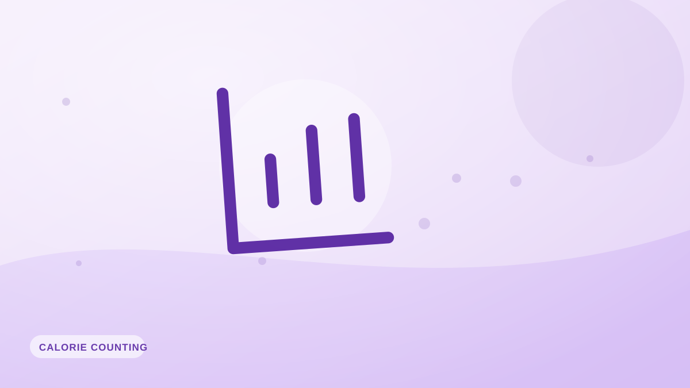

Entender tu tasa metabólica basal (TMB)
>Tu TMB es la energía que tu cuerpo quema solo por mantenerte vivo. Qué la afecta, cómo estimarla y cómo encaja en tus necesidades calóricas.

Tu tasa metabólica basal (TMB) es el número de calorías que tu cuerpo quema en reposo absoluto solo por mantenerte vivo: respirar, hacer circular la sangre, mantener la temperatura y hacer funcionar tus órganos. Para la mayoría de la gente es la porción más grande del gasto calórico diario, y entenderla aclara todo lo demás.
TMB frente a TDEE
La TMB es lo que quemarías tumbado sin moverte todo el día. Tu TDEE (gasto energético total diario) es la TMB más la digestión, el movimiento cotidiano y el ejercicio. La TMB suele ser el 60–70 % del TDEE: el cimiento sobre el que se construye el resto.
Qué afecta a tu TMB
- Tamaño corporal: los cuerpos más grandes queman más en reposo.
- Masa muscular: el músculo es metabólicamente más activo que la grasa, así que más músculo sube algo la TMB.
- Edad: la TMB tiende a bajar con los años, en parte por la pérdida de músculo.
- Sexo y genética: también influyen en tu punto de partida.
Cómo estimarla
La ecuación de Mifflin-St Jeor es una estimación muy usada basada en tu peso, altura, edad y sexo. Es un buen punto de partida, aunque las TMB individuales varían alrededor de la predicción.
¿Se puede «acelerar» la TMB?
No de forma espectacular, digan lo que digan los suplementos. La palanca más legítima es construir músculo con entrenamiento de fuerza, que sube algo la TMB. Las dietas exprés hacen lo contrario: pueden bajarla al costarte músculo.
Cómo aplicarlo
Estima tu TMB, escálala a TDEE con un factor de actividad y fija tu objetivo de calorías a partir de ahí. Desde ese punto, tus propios resultados registrados —fáciles de anotar con Fotocal— convierten la estimación en algo exacto para ti.
Ideas clave
- La TMB es la energía que te mantiene vivo en reposo: la mayor parte de tu gasto.
- El TDEE es la TMB más digestión, movimiento y ejercicio.
- La moldean el tamaño corporal, el músculo, la edad, el sexo y la genética.
- Construye músculo para subirla; las dietas exprés la bajan.